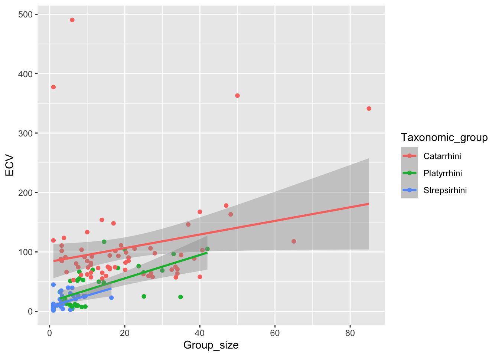

Here I pull the Street et al 2017 csv file as a raw github link. I use {tidyverse} read_csv function to read the csv as my data frame d.
library(tidyverse)
── Attaching core tidyverse packages ──────────────────────── tidyverse 2.0.0 ──
✔ dplyr 1.2.0 ✔ readr 2.1.6
✔ forcats 1.0.1 ✔ stringr 1.6.0
✔ ggplot2 4.0.1 ✔ tibble 3.3.1
✔ lubridate 1.9.4 ✔ tidyr 1.3.2
✔ purrr 1.2.1
── Conflicts ────────────────────────────────────────── tidyverse_conflicts() ──
✖ dplyr::filter() masks stats::filter()
✖ dplyr::lag() masks stats::lag()
ℹ Use the conflicted package (<http://conflicted.r-lib.org/>) to force all conflicts to become errors
f <-"https://raw.githubusercontent.com/difiore/ada-datasets/refs/heads/main/Street_et_al_2017.csv"d <-read_csv(f, col_names =TRUE)
Rows: 301 Columns: 13
── Column specification ────────────────────────────────────────────────────────
Delimiter: ","
chr (2): Species, Taxonomic_group
dbl (11): Social_learning, Research_effort, ECV, Group_size, Gestation, Wean...
ℹ Use `spec()` to retrieve the full column specification for this data.
ℹ Specify the column types or set `show_col_types = FALSE` to quiet this message.
Exploratory data analysis
Next, I generate the mean, standard deviation and 5-number summary (median, minimum, maximum and 1st and 3rd quartile values) for every numeric variable. I used {skimr} for this quick exploratory data analysis (I call skim() for my data frame d).
library(skimr)eda <-skim(d)eda
Data summary
Name
d
Number of rows
301
Number of columns
13
_______________________
Column type frequency:
character
2
numeric
11
________________________
Group variables
None
Variable type: character
skim_variable
n_missing
complete_rate
min
max
empty
n_unique
whitespace
Species
0
1
10
41
0
301
0
Taxonomic_group
0
1
10
12
0
3
0
Variable type: numeric
skim_variable
n_missing
complete_rate
mean
sd
p0
p25
p50
p75
p100
hist
Social_learning
98
0.67
2.30
16.51
0.00
0.00
0.00
0.00
214.00
▇▁▁▁▁
Research_effort
115
0.62
38.76
80.59
1.00
6.00
16.00
37.75
755.00
▇▁▁▁▁
ECV
117
0.61
68.49
82.84
1.63
11.82
58.55
86.20
491.27
▇▁▁▁▁
Group_size
114
0.62
13.26
15.20
1.00
3.12
7.50
18.23
91.20
▇▂▁▁▁
Gestation
161
0.47
164.50
38.00
59.99
138.35
166.03
183.26
274.78
▁▅▇▃▁
Weaning
185
0.39
311.09
253.08
40.00
121.66
234.16
388.78
1260.81
▇▃▁▁▁
Longevity
181
0.40
331.97
165.67
103.00
216.00
301.20
393.30
1470.00
▇▂▁▁▁
Sex_maturity
194
0.36
1480.23
999.23
283.18
701.52
1427.17
1894.11
5582.93
▇▆▂▁▁
Body_mass
63
0.79
6795.18
14229.83
31.23
739.44
3553.50
7465.00
130000.00
▇▁▁▁▁
Maternal_investment
197
0.35
478.64
292.07
99.99
255.88
401.35
592.22
1492.30
▇▅▂▁▁
Repro_lifespan
206
0.32
9064.97
4601.57
2512.16
6126.22
8325.89
10716.60
39129.57
▇▃▁▁▁
STEP 2
In this step, I plot brain size (ECV) against (1) social group size (Group_size), (2) Longevity, (3) juvenile period length (Weaning) and (4) reproductive lifespan (Repro_lifespan) in {ggplot2}. For that, first I select my noted variables and call it under d_temp.
Then, I use {tidyr} pivot_longer() function, which reshapes data by gathering those four predictor columns (excludes ECV) into two new columns: (1) predictor (stores predictor names) and (2) value (stores corresponding values). I also use drop_na() to get rid of missing NAs, as it messes up x-axis scales when I plot the graph (missing rows are removed from drawing the points, but they still affect the plot scales).
This makes it easier to plot several predictors in the same plot. I use {ggplot2} to plot ECV against my four predictor values with geom_point(). I facet_wrap(~ predictor) to split the graph into separate panels for each predictor variable. Using scales = “free_x” allows each panel to have its own x-axis scale (because the predictors ranges differ a lot).
Next, I create a new dataset d2, where I only select() ECV and Group_size, while removing NAs —> drop_na(). For the regression of ECV ~ Group_size, I calculate b1 (slope coeff) by dividing covariance (cov()) between Group_size and ECV by the variance (var()) of Group_size. Then, I calculate b0 (intercept), using b0= mean(y) - b1*mean(x), where y=ECV, x=Group_size.
d2 <- d |>select(ECV, Group_size) |>drop_na()b1 <-cov(d2$Group_size, d2$ECV) /var(d2$Group_size)b1
[1] 2.463071
b0 <-mean(d2$ECV) - b1 *mean(d2$Group_size)b0
[1] 30.35652
STEP 4
Here, I fit a linear model for my d2 data by ECV ~ Group_size. I use the {stats} lm() function and call it m1.
I confirmed that step 3 and 4 results are identical to each other.
STEP 5
I use {dplyr} operators to select ECV, Group_size and Taxonomic_group, while dropping NAs (drop_na()) and filtering Taxonomic_group by “Catarrhini”, “Platyrrhini”, “Strepsirhini”. Next, I fit a linear model for each primate group by ECV ~ Group_size and obtain the statistics via {broom} tidy().
library(broom)d3 <- d |>select(ECV, Group_size, Taxonomic_group) |>drop_na() |>filter(Taxonomic_group %in%c("Catarrhini", "Platyrrhini", "Strepsirhini"))m2 <-lm(ECV ~ Group_size, data =filter(d3, Taxonomic_group =="Catarrhini"))m3 <-lm(ECV ~ Group_size, data =filter(d3, Taxonomic_group =="Platyrrhini"))m4 <-lm(ECV ~ Group_size, data =filter(d3, Taxonomic_group =="Strepsirhini"))tidy(m2)
The regression coefficients differ among the three groups. Catarrhines have a much higher intercept (83.42) and a smaller slope (1.15), while platyrrhines and strepsirrhines have lower intercepts (16.18 and 8.18) and somewhat steeper slopes (1.97 and 1.84).
To determine whether these differences are statistically significant, I fit a single linear model including an interaction between Group_size and Taxonomic_group and plot them:
m5 <-lm(ECV ~ Group_size * Taxonomic_group, data = d3)summary(m5)
Call:
lm(formula = ECV ~ Group_size * Taxonomic_group, data = d3)
Residuals:
Min 1Q Median 3Q Max
-71.25 -21.89 -5.40 6.73 400.11
Coefficients:
Estimate Std. Error t value Pr(>|t|)
(Intercept) 83.4206 10.5898 7.877 7.22e-13 ***
Group_size 1.1463 0.4107 2.791 0.005965 **
Taxonomic_groupPlatyrrhini -67.2394 18.1711 -3.700 0.000305 ***
Taxonomic_groupStrepsirhini -75.2442 15.3437 -4.904 2.49e-06 ***
Group_size:Taxonomic_groupPlatyrrhini 0.8189 0.9988 0.820 0.413644
Group_size:Taxonomic_groupStrepsirhini 0.6943 2.4927 0.279 0.780986
---
Signif. codes: 0 '***' 0.001 '**' 0.01 '*' 0.05 '.' 0.1 ' ' 1
Residual standard error: 53.93 on 145 degrees of freedom
Multiple R-squared: 0.4154, Adjusted R-squared: 0.3952
F-statistic: 20.6 on 5 and 145 DF, p-value: 1.648e-15
p2 <-ggplot(d3, aes(x = Group_size, y = ECV, color = Taxonomic_group)) +geom_point() +geom_smooth(method ="lm")p2
`geom_smooth()` using formula = 'y ~ x'

Here, catarrhines are the reference group, so their coefficients are shown by the intercept and Group_size. The coefficients for platyrrhines and strepsirrhines are shown as differences relative to catarrhines. The results suggest that intercepts differ among groups, but the interaction terms are not significant, so there is no strong evidence that the slopes differ among groups that much. The plot supports the same, although looks kind of messy.
STEP 6
This code calculates the slope SE, t statistic, p-value and 95% CI for the regression of ECV on Group_size by hand and compares them to the values returned by lm().
I assign x = Group_size, y = ECV and store the # of observations as n. Then, I calculate the SE of the slope, using the residual variation around the regression line and the variation in x. Next, I calculate the t stat by dividing the slope (b1) by its SE and use that to find the p-value. I also calculate the 95% CI for the slope as b1 +- t* SE. Finally, I compare my hand-calculated SE, CI and p-value to the results from tidy(m1) and confint(m1) to confirm they matched the lm() output.
For the regression of ECV on Group_size (m1), the slope standard is 0.3508. Using this, I calculated a 95% CI of (1.7699, 3.1563) and a p-value of 7.26 × 10^-11 for the slope. These values match the results obtained from tidy(m1) and confint(m1).
STEP 7
I set the # of permutations to 1000 and create an empty vector (perm_coeffs) to store the slope coefficient from each permutation. Then, I extract the observed slope coefficient from my first model (m1), which is the slope for Group_size. This is what I need to run the permutation.
Inside the for loop, I create d_perm from existing d2 dataset. Group_size values are randomly shuffled using sample(). For each permutation, I fit a linear model lm(). I extract the slope coefficient for Group_size (tidy(), filter(), pull(estimate)), which I store in perm_coeffs.
After the loop, I plot perm_coeffs as a histogram. Finally, the p-value is calculated as the mean of permuted slope coeffs, whose absolute value is >= the absolute value of the observed slope, giving a two-tailed permutation p-value.
nperm <-1000perm_coeffs <-vector(length = nperm) ## new vector to hold the resultsobserved_coeff <-tidy(m1) |>filter(term =="Group_size") |>pull(estimate)for (i in1:nperm) { d_perm <- d2 d_perm$Group_size <-sample(d2$Group_size) perm_coeffs[[i]] <-lm(ECV ~ Group_size, data = d_perm) |>tidy() |>filter(term =="Group_size") |>pull(estimate)}hist(perm_coeffs)
my p-value is 0 (very close to it). This indicates that the positive relationship between Group_size and ECV provides a strong evidence against the null hypothesis.
STEP 8
I estimate the slope coefficient (ECV on Group_size) using bootstrapping with 1000 resamples. In each bootstrap, I resample d2 with replacement, fit the linear model ECV ~ Group_size and store the estimated slope. Then, I calculate a 95% CI using the (1) quantile method from the 2.5th and 97.5th percentiles of the distribution and also (2) a theory-based method, where the standard deviation of the bootstrap slopes was used as the standard error.